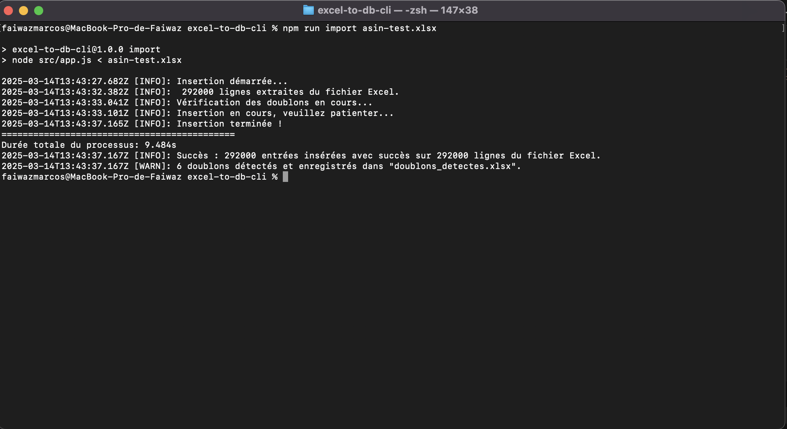

Cette application en ligne de commande permet d'extraire des données d'un fichier Excel et de les insérer dans une base de données PostgreSQL. Elle détecte les doublons et enregistre ces derniers dans un fichier séparé pour une vérification ultérieure.
stdin.doublons_detectes.xlsx.YYYY-MM-DD).Avant d'exécuter ce script, assurez-vous d'avoir installé :
npm install)Clonez le projet :
git clone https://github.com/fawazmarcos/excel-to-db-cli.git
cd excel-to-db-cli
Installez les dépendances :
npm install
Configurez la base de données :
.env.example et renommez-le en .envDB_HOST=localhost
DB_PORT=5432
DB_USER=votre_utilisateur
DB_PASSWORD=votre_mot_de_passe
DB_NAME=excel_db
Exécutez les migrations de la base de données :
npm run migrate
Avant de commencer, applique les migrations :
npm run migrate
npm run import nom_du_fichier.xlsx
Cette commande vous épargne de devoir passer par la commande cat pour rediriger le contenu du fichier Excel vers stdin comme suit :
cat nom_du_fichier.xlsx | node src/app.js
Ou d'éviter cette manière:
node src/app.js < nom_du_fichier.xlsx
Sous Windows :
Windows ne prend pas en charge la redirection de stdin de la même manière qu'Unix. Vous devez installer Git Bash ou WSL (Windows Subsystem for Linux) pour exécuter la commande ci-dessus.
npm run import asin-test.xlsx
Voici un exemple d'exécution du script avec un fichier contenant 292 000 entrées :

Insertion démarrée...
292000 lignes extraites du fichier Excel.
Vérification des doublons en cours...
Insertion en cours, veuillez patienter...
Insertion terminée !
=========================
Durée totale du processus: 9.463s
Succès : 292000 entrées insérées avec succès sur 292000 lignes du fichier Excel.
6 doublons détectés et enregistrés dans "doublons_detectes.xlsx".
Pour exécuter les tests unitaires et d'intégration, lance :
npm test
Si besoin de revenir à l'état précédent :
npm run rollback
stdin.xlsx et transformées en objets JSON.matricule, nom, prenom, status, datedenaissance).dd/MM/yyyy, MM/dd/yyyy, yyyy-MM-dd, etc.) vers le format ISO.matricules pour identifier les doublons.doublons_detectes.xlsx pour permettre une correction ultérieure.docs/documentation.npm run docs
Cette application permet d’importer rapidement et efficacement un fichier Excel dans une base de données, en s’assurant que les données sont valides et correctement formatées.
Projet développé par Faiwaz Marcos---- Email: marcosfaiwaz@gmail.com